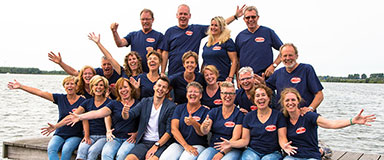

<div class="event-info">
	<div>
		<div class="img-wrap">
	
		</div>
		<div class="songs">
			<p title="The Kiki Dee Band">I've Got The Music With Me</p>
			<p title="Norah Jones">Don't Know Why</p>
			<p title="Foreigner">Cold As Ice</p>
			<p title="Seal">Kiss From A Rose</p>
			<p title="The Greatest Showman Cast">This Is Me</p>
			<p>Sing</p>
			<p title="Ed Sheeran">Thinking Out Loud</p>
			<p title="P!nk">What About Us</p>
			<p title="Christopher Tin">Baba Yetu</p>
			<p title="The Scene">Iedereen Is Van De Wereld</p>
		</div>
		<div class="content-wrap">
    <p><strong>Pop- en musicalgroep Swinging Harderwijk</strong></p>
	<p>Pop- en musicalgroep Swinging Harderwijk (tot 2017 Swinging Squabble) bestaat sinds 1997 en telt momenteel zo'n 25 leden.</p>
	<p>Naast optredens op straat bij diverse evenementen geven wij af en toe een avondvullende show met veel zang en dans; een show met een eigen gezicht en een professionele uitstraling.</p>
	<p>&nbsp;</p>
	<p>Dirigent: Bouke Sleuring</p>
	<p>&nbsp;</p>
	<p><a href="http://www.swingingharderwijk.com" target="_blank">http://www.swingingharderwijk.com</a></p>
		</div>
	</div>
</div>
